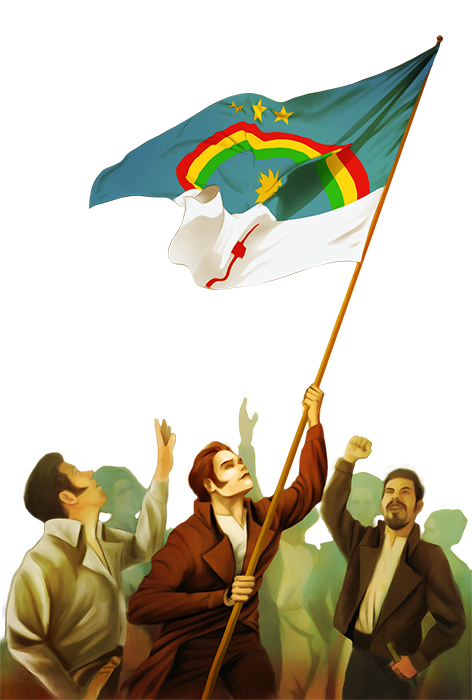

André
" Varão perfeito na sua moral, ainda reunindo as vantagens do celibato com o favor da economia doméstica, e obediência a sua velha e venerável mãe, cheio de vigor e aparências juvenis na idade de 40 anos, realçava tantas e tão belas qualidades com popularidade imensa, não só na província e em todas as convizinhas, mas em toda a parte onde era conhecido." - Padre Joaquim Dias Martins
André de Albuquerque Maranhão nasceu em Canguaretama/RN, em 04/05/1775, filho de Antônia Josefa do Espírito Santo Ribeiro e de André de Albuquerque Maranhão.
 Revolução Pernambucana 1817Liderou a Revolução de 1817 (também conhecida como Revolução Pernambucana), no Rio Grande do Norte. Grande proprietário rural, Cavaleiro da Casa Real, Senhor de Cunhaú e comandava a Cavalaria Miliciana da Repartição do Sul. Participou, também da Conspiração dos Suassunas, em 1801, em Pernambuco. A conspiração foi uma insurreição, organizada em Olinda, pelos irmãos Francisco (com 32 anos), José e Luiz (com 29 anos) de Paula Cavalcante de Albuquerque, proprietários do engenho Suassuna, que arquitetava dar independência à Pernambuco diante do reino de portugal.
Em 1806, retorna a Cunhaú, após o falecimento de seu pai, passando a administrar todos os engenhos que pertenciam a sua família no Rio Grande do Norte, Paraíba e Pernambuco. Na manhã de 28 de março de 1817, André com sua tropa, parentes e oficiais, faz a entrada solene na capital, apoiado pela Companhia de Linha. No dia seguinte, convocou pessoas conhecidas e religiosas, constituindo o governo. No dia 30 do dito mês chega o reforço militar da Paraíba, cinquenta soldados comandados por José Peregrino Xavier de Carvalho. Mas, após a partida destes, em 25 de Abril, enfraquece o governo de André De Albuquerque. Todos o abandonam, exceto o Padre João Damasceno.
André De Albuquerque viu a sua sala ser invadida pelos contrarrevolucionários. Inerte, ante a surpresa, negou-se a entregar-se e quis reagir, mas estava só. Foi então ferido por Antônio José Leite Pinho que atingiu com a espada a sua região inguinal. No tumulto, ainda procurando segurar a lâmina, fere dois dedos. Ferido, foi conduzido para a Fortaleza dos Reis Magos e colocado em um quarto escuro. Sem assistência e tratamento, agonizou a noite inteira. Apenas recebeu do soldado Inácio Manuel de Oliveira, uma esteira para forrar o solo molhado e uma trouxa de roupa para descansar a cabeça. Ao sentir que a morte que se aproximava, chamou o Vigário da Freguesia de Natal, Feliciano José D'Ornelhas, para lhe conceder a extrema-unção. Faleceu o Senhor De Cunhaú, com aproximadamente 40 anos de idade. Pela Manhã, retiraram o corpo de André de Albuquerque que foi transportado nu, sujo de sangue coagulado, para ser sepultado na Matriz de Natal.